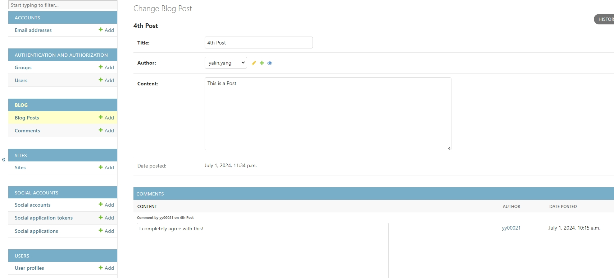

15. Customizing the Django Admin#
Django’s automatically generated admin site is one of the biggest strengths of the framework.
In this Chapter, we will discuss about
Perform basic Django admin site configuration
Explain how Django model attributes affect the admin site
Use
list_displayto control which model fields are displayedAdd custom fields to
list_displayand format existing onesAdd links to related model objects in
list_displayEnable search and filters via
search_fieldsandlist_filterHandle model inlines for both
N:1andM:MrelationshipsUse Django admin actions and create custom ones
Override Django admin forms and templates
Utilize DjangoQL for advanced searching functionality
Import data in and export data to different formats using
django-import-exportModify the appearance of your admin site via
django-admin-interface
15.1. Basic Admin Site Customization#
The
Django admin siteprovides some basic configuration options. These options allow you to change the site’s title, header, site URL, and more.The
admin.sitesettings are usually modified in your project’s mainurls.pyfile.# django_project/urls.py ... admin.site.site_title = "Blog Site Admin (DEV)" admin.site.site_header = "Blog Administration" admin.site.index_title = "Site Administration" ...
Another thing you should do is change the
default /adminURL. This’ll make it more difficult for malicious actors to find your admin panel.# django_project/urls.py urlpatterns = [ path("secretadmin/", admin.site.urls), path('users/', include('users.urls')), path('', include('blog.urls')), ] ...
Your admin site should now be accessible at
http://localhost:8000/secretadmin.
15.2. Django Model and Admin#
Some Django model attributes directly affect the Django admin site. Most importantly:
__str__()is used to define object’s display nameMetaclass is used to set various metadata options (e.g.,orderingandverbose_name)
Here’s an example of how these attributes are used in practice:
By providing the
orderingattribute the categories are now ordered bydate_posted.class Post(models.Model): title = models.CharField(max_length=80) author = models.ForeignKey(User, on_delete= models.CASCADE) content = models.TextField() date_posted = models.DateTimeField(default=timezone.now) def __str__(self): return self.title class Meta: verbose_name = "Blog Post" verbose_name_plural = "Blog Posts" ordering = ["-date_posted"] def get_absolute_url(self): return reverse('post-detail', kwargs={'pk': self.pk})
15.3. Customize Admin Site with ModelAdmin Class#
In this section, we’ll take a look at how to use the ModelAdmin class to customize the admin site.
15.3.1. Control List Display#
The
list_displayattribute allows you to control which model fields are displayed on the model list page.Another great thing about it is that it can display related model fields using the
__operator.Here’s the demo script
# blog/admin.py @admin.register(Post) class PostAdmin(admin.ModelAdmin): # Fields to display in the list view list_display = ('title', 'author', 'date_posted') # Displays these fields in the list view # Default ordering of records ordering = ('-date_posted',) # Orders the posts by date_posted in descending order # Read-only fields in the form readonly_fields = ('date_posted',) # Makes date_posted field read-only # Custom admin for the Comment model @admin.register(Comment) class CommentAdmin(admin.ModelAdmin): # Fields to display in the list view list_display = ('post', 'author', 'date_posted') # Displays post, author, and date_posted in list view # Default ordering of records ordering = ('-date_posted',) # Orders comments by date_posted in descending order # Read-only fields in the form readonly_fields = ('date_posted',) # Makes date_posted field read-only
15.3.2. List Display Custom Fields#
The
list_displaysetting can also be used to add custom fields.To add a custom field, you must define a new method within the
ModelAdminclass.Here’s the demo script
# blog/admin.py @admin.register(Post) class PostAdmin(admin.ModelAdmin): # Fields to display in the list view list_display = ('title', 'author', 'date_posted','comment_count') # Displays these fields in the list view # ... # Method to count comments for each post def comment_count(self, obj): return obj.comments_count comment_count.short_description = 'Number of Comments' # Sets the column header name in the admin # Optimizing query with annotation def get_queryset(self, request): queryset = super().get_queryset(request) # Annotate each post with the count of related comments queryset = queryset.annotate(comments_count=Count('comment')) return queryset
Explanation
comment_count(self, obj)Method:This method is used to display the number of comments related to each post.
It uses the
comments_countvalue annotated to each post in theget_querysetmethod.short_descriptionis used to define the label that will appear as the column header in the admin list view.
get_queryset(self, request):This method overrides the default
get_querysetof theModelAdminto annotate each post with the count of its related comments.The
annotate(comments_count=Count('comment'))line adds acomments_countfield to each post object, counting the related Comment instances.
15.3.4. Filter Model Objects#
Django admin makes it easy to filter objects.
Best of all, Django can stack filters – e.g., filter by two or more fields simultaneously.
To filter by a related object’s fields, use the
__operator.For more advanced filtering functionality, you can also define
custom filters.To define a custom filter, you must specify the options or so-called
lookupsand aquerysetfor eachlookup
Here’s the demo script to filter
Commentbyposted_dateofPostfrom django.utils import timezone from datetime import datetime, timedelta # Custom filter to display post's posted date with a custom name class PostPostedDateFilter(admin.SimpleListFilter): title = 'Post Posted Date' # Sets the display title for the filter parameter_name = 'post__date_posted' # The field name used in the query parameters def lookups(self, request, model_admin): """ Returns a list of tuples. Each tuple contains a value and a display name for the filter options. """ return [ ('today', 'Today'), ('past_7_days', 'Past 7 days'), ('this_month', 'This month'), ('this_year', 'This year'), ] def queryset(self, request, queryset): """ Filters the queryset based on the selected filter option. """ today = timezone.now().date() if self.value() == 'today': return queryset.filter(post__date_posted__date=today) elif self.value() == 'past_7_days': past_7_days = today - timedelta(days=7) return queryset.filter(post__date_posted__date__gte=past_7_days) elif self.value() == 'this_month': return queryset.filter( post__date_posted__year=today.year, post__date_posted__month=today.month ) elif self.value() == 'this_year': return queryset.filter(post__date_posted__year=today.year) return queryset # Default returns all if "Any date" is selected or no option matches # Custom admin for the Comment model @admin.register(Comment) class CommentAdmin(admin.ModelAdmin): # ... # Fields to filter the records list_filter = ('author', 'date_posted',PostPostedDateFilter) # Adds filters for post, author, and date posted # ...
15.3.5. Search Model Objects#
Django adminprovides basic search functionality.It can be enabled by specifying which model fields should be searchable via the
search_fieldsattribute.Here’s the demo script
@admin.register(Post) class PostAdmin(admin.ModelAdmin): # ... # Fields that are searchable search_fields = ('title', 'content') # Allows searching through titles and content # ... # Custom admin for the Comment model @admin.register(Comment) class CommentAdmin(admin.ModelAdmin): # ... # Fields that are searchable search_fields = ('content',) # Allows searching through the comment content # ...
15.3.6. Handle Model Inlines#
The
admin interfaceallows you to editmodelson the same page as the parent model viainlines.Django provides two types of
inlinesStackedInline and TabularInline.Let’s use an inline to display
Commentson thePost details page# Inline admin to display comments directly within the Post admin class CommentInline(admin.TabularInline): model = Comment extra = 0 # Number of empty forms displayed to add new comments readonly_fields = ('author', 'date_posted') # Display these fields as read-only @admin.register(Post) class PostAdmin(admin.ModelAdmin): # ... # Inlines allow comments to be managed directly within the Post form inlines = [CommentInline] # Displays related comments inline with the Post
Visit the admin site now, you should able to see the comments on the post detail page

15.3.7. Custom Admin Actions#
Django admin actionsallow you to perform an “action” on an object or a group of objects.An
actioncan be used to modify an object’s attributes, delete the object, copy it, and so forth.Suppose we try to define
empty_commentto cleancontentof selected comment@admin.action(description="Clean selected comments' content") def empty_comments(modeladmin, request, queryset): queryset.update(content='') # Custom admin for the Comment model @admin.register(Comment) class CommentAdmin(admin.ModelAdmin): # ... actions = [empty_comments]
Now you can see the added actions in admin site
15.4. Override Django Admin Forms#
15.5. Override Django Admin Templates#
15.6. Extensions#
15.6.1. Meta class options#
Here I list more commonly used Metaclass options, check it out.
| Meta Option | Purpose | Code Example |
|---|---|---|
| verbose_name | Sets a human-readable singular name for the model. | class Meta: |
| verbose_name_plural | Sets a human-readable plural name for the model. | class Meta: |
| ordering | Specifies the default ordering of model instances. | class Meta: |
| unique_together | Enforces a unique constraint on the specified fields. | class Meta: |
| permissions | Defines custom permissions for the model. | class Meta: |
| db_table | Sets the name of the database table used for the model. | class Meta: |
| get_latest_by | Defines the default field used when retrieving the latest object. | class Meta: |
| indexes | Creates database indexes on specified fields for faster lookups. | class Meta: |
| abstract | Specifies that the model is abstract and will not be created as a database table. | class Meta: |
| constraints | Defines custom database constraints on the model. | class Meta: |
| default_permissions | Specifies the default permissions (add, change, delete, view) for the model. | class Meta: |
| proxy | Creates a proxy model that inherits from another model, used for different model behavior. | class Meta: |
| managed | Indicates if Django should manage the model’s database table (e.g., create/drop tables). | class Meta: |
| auto_created | Indicates that the model was automatically created (typically for intermediate tables). | class Meta: |
| select_on_save | Forces Django to select the instance from the database immediately after saving. | class Meta: |
| default_related_name | Sets the default reverse relationship name for foreign key fields. | class Meta: |
| index_together | Creates a composite index on the specified fields for efficient multi-column searches. | class Meta: |
| apps | Customizes the application labels associated with the model (used in advanced scenarios). | class Meta: |
| base_manager_name | Specifies the name of the default manager for the model. | class Meta: |
15.6.2. Inline options#
Here’s a table introducing commonly used methods and properties of
admin.StackedInlineandadmin.TabularInline.These two classes are used in
Django’s admin interfaceto display related models directly within theparent model's form, enhancing the data management experience.
| Method/Property | Purpose | Code Example |
|---|---|---|
| model | Specifies the model to be displayed as an inline within the parent model's admin page. | class CommentInline(admin.TabularInline): |
| extra | Defines the number of empty forms displayed by default when adding related objects. | extra = 1 |
| fields | Specifies the fields to display in the inline form. | fields = ['author', 'content', 'date_posted'] |
| readonly_fields | Displays specified fields as read-only, preventing edits directly in the inline form. | readonly_fields = ['date_posted'] |
| max_num | Sets the maximum number of forms that can be added in the inline. | max_num = 5 |
| min_num | Sets the minimum number of forms that must be present in the inline. | min_num = 1 |
| fk_name | Specifies a custom foreign key to use if the related model has more than one foreign key to the parent model. | fk_name = 'related_field' |
| verbose_name | Customizes the singular name of the inline object in the admin interface. | verbose_name = 'Post Comment' |
| verbose_name_plural | Customizes the plural name of the inline object in the admin interface. | verbose_name_plural = 'Post Comments' |
| can_delete | Allows or disallows deletion of the inline objects directly in the parent form. | can_delete = True |
| show_change_link | Displays a link to edit each related object from the inline list view. | show_change_link = True |
| formset | Allows customization of the formset class used for the inline, enabling more complex validation or custom behavior. | formset = CustomCommentFormSet |
| template | Specifies a custom template for rendering the inline form, allowing for deeper UI customization beyond default Tabular or Stacked layouts. | template = 'admin/custom_inline_template.html' |
| classes | Adds CSS classes to the inline section for styling purposes. | classes = ['collapse'] |
| ordering | Defines the default ordering of the related objects within the inline form. | ordering = ['-date_posted'] |
| exclude | Excludes specific fields from being displayed in the inline form. | exclude = ['password'] |
| list_display (TabularOnly) | Displays specified fields in a tabular format in the list view. Used specifically with admin.TabularInline for enhanced data presentation. | class MyInline(admin.TabularInline): |
| prepopulated_fields | Automatically populates fields based on the values of other fields, often used with slugs. | prepopulated_fields = {'slug': ('title',)} |
| sortable_field_name | Allows sorting of inline objects by a specific field, typically used when items are ordered manually (like drag-and-drop sorting). | sortable_field_name = 'order' |